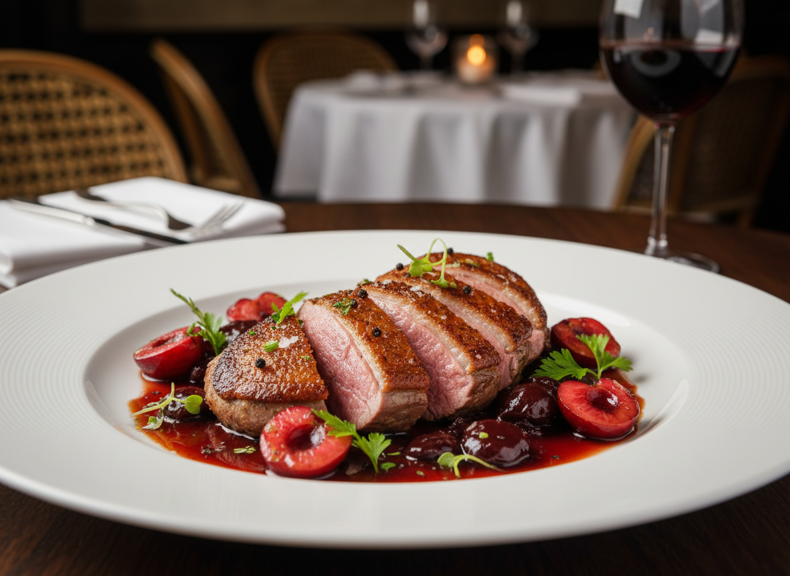
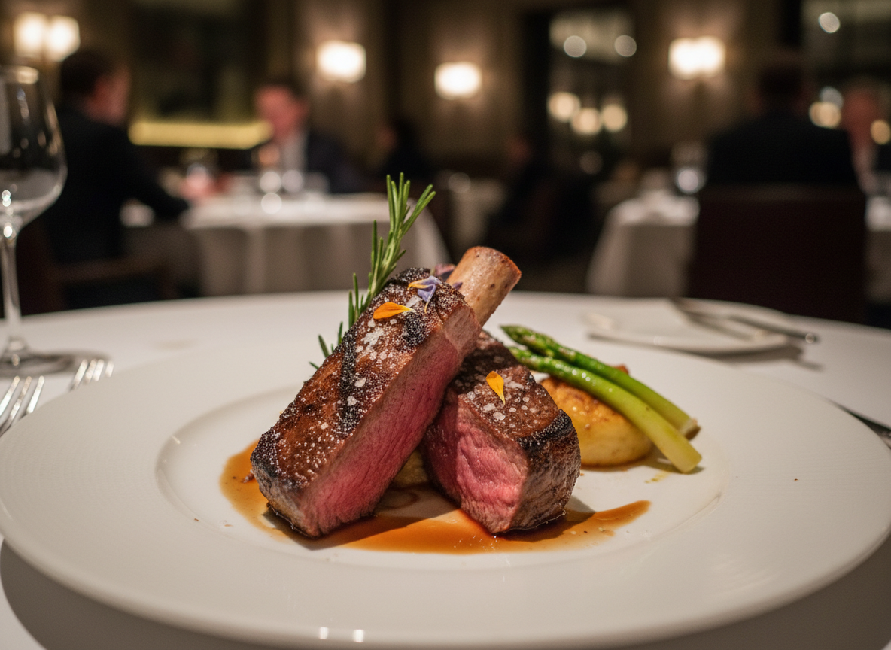
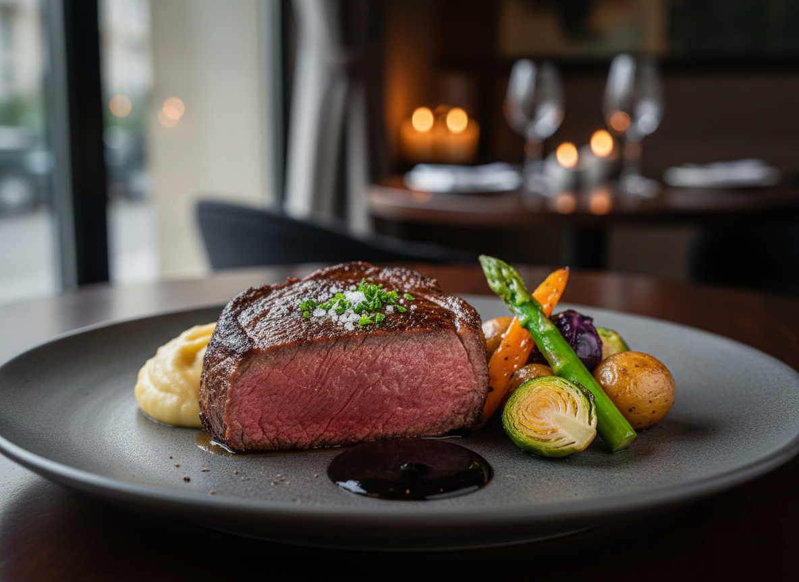

主菜加價 Main course price increase
Main course price increase
主菜アップグレード（メインディッシュ追加料金）
加價 80 元為 320 元即可升級主餐，享用本區精選餐點，為您的餐點增添更多層次。
Upgrade your main course for an additional NT$80 (total NT$320) and enjoy our specially selected dishes, adding richer layers of flavor to your dining experience.
追加料金 80元、合計 320元 でメインディッシュをアップグレード。 本セクション厳選の料理をお楽しみいただき、 お食事にさらなる奥行きと贅沢さを添えます。
法式櫻桃鴨胸
French Cherry Duck Breast
フランス産チェリーダック 胸肉のロースト

320元 NT$320
嚴選櫻桃鴨胸，以低溫乾煎鎖住肉汁，外皮酥香、肉質柔嫩多汁，搭配細緻香料提味，呈現法式經典風味。
Carefully selected cherry duck breast, pan-seared at low temperature to seal in its natural juices. Crispy skin and tender, juicy meat are enhanced with delicate spices, presenting a classic French flavor.
厳選したチェリーダックの胸肉を低温でじっくりと焼き上げ、 旨みを閉じ込めました。 香ばしい皮と、柔らかくジューシーな肉質に、 繊細なスパイスを合わせたフランス料理の定番です。
慢火香煎牛肩小排
Slow-Seared Beef Chuck Short Ribs
牛肩ショートリブの低温ソテー

320元 NT$320
選用油花分布均勻的牛肩小排，經慢火香煎至完美熟度，肉香濃郁、口感軟嫩，展現牛肉最純粹的層次風味。
Premium beef chuck short ribs with evenly distributed marbling, slowly seared to perfection for a rich beef aroma and a tender, melt-in-your-mouth texture, showcasing the pure and refined flavors of beef.
きめ細かな霜降りの牛肩ショートリブを使用し、 低温でゆっくりとソテーすることで、 濃厚な旨みとやわらかな食感を引き出しました。 牛肉本来の奥深い味わいをお楽しみいただけます。
紅酒慢燉羊肩肉
Red Wine Braised Lamb Shoulder
ラム肩肉の赤ワイン煮込み

320元 NT$320
精選羊肩部位，佐以紅酒與香草長時間慢燉，肉質軟嫩入味，風味醇厚溫潤，帶出經典歐式燉料理的深度層次。
Selected lamb shoulder, slowly braised with red wine and aromatic herbs. The meat is tender and deeply infused with flavor, offering a warm, full-bodied taste that reflects the depth of classic European braised cuisine.
厳選したラム肩肉を赤ワインと香草で長時間煮込み、 しっとりと柔らかく、味わい深い仕上がりに。 クラシックな欧風煮込み料理の豊かなコクが感じられる一品です。